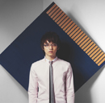

New Single『ただ ただ』最新情報!!
5/23に、New Sigle『ただ ただ』をリリース!!!
この曲は、シングルとしては初となるバラード。感情的なピアノの旋律と繊細で美しいヴァイオリンの音色が森大輔の世界観をより一層引き立てる作品です。
カップリングには「ただ ただ」のピアノ・ヴァージョンを収録。森大輔ならではの“ピアノが歌う”インストゥルメンタル。こちらも聴き逃せません!!
さらに本作には、【シングル予約特典／購入者特典】として、ピアノ弾き語りによる「Rain（LIVE version）」がBonus Discとして含まれます。
名曲「Rain」の新しい魅力がつまったBonus Discは、数量限定の貴重盤です。
New Single
『ただ ただ』
WPCL-10402 ￥1,000（tax in）
produced,arranged,composed,& performed, by MORI DAISUKE
trck.01 ただ ただ
trck.02 MUSE
trck.03 ただ ただ（PIANO version）
Bonus Disc：Rain（LIVE version）
※特典実施店舗に関しましては後日お知らせします。
5/23リリースシングル「ただ ただ」着うた先行配信スタート!
2007.5.23リリースシングル「ただ ただ」の収録全3曲が、5/9(水)より着うたにて先行配信スタートします。
是非、チェックしてみて下さい!!
・「ただ ただ」
・「MUSE」
・「ただ ただ」（PIANO version）
詳しくは以下のサイトをチェック！
レコード会社直営（レコ直）
http://recochoku.jp
ワーナーモバイル
http://wmg.jp/mobile
5/23リリース「ただ ただ」を森大輔のサポート・ショップでご予約/ご購入するともれなく先着でプレゼント！
５月２３日リリース 森大輔のニュー・シングル「ただ ただ」を以下の店舗でご予約またはご購入いただくと先着であの名曲「Rain」のLIVE versionの完全限定生産ＣＤをプレゼントいたします！
数に限りがありますのでお早めに！！
■キャンペーン実施店舗
＜札幌＞
タワーレコードアリオ札幌店
タワーレコード札幌ピヴォ店
ＨＭＶ札幌ステラプレイス店
玉光堂PASEO店
玉光堂オ−ロラタウン店
玉光堂新さっぽろ店
キクヤ
サウンドコミュニケーション イズム
＜東京＞
HMV渋谷店
山野楽器本店
新星堂 新宿ルミネ店
新星堂 DISK INN吉祥寺店
新星堂 恵比寿店
WAVE汐留店
ペットサウンズ
タワーレコード新宿店
タワーレコード渋谷店
石丸電気 SOFT2
石丸電気 SOFT１
ヤマギワソフト館
HMV新宿サウス店
HMV池袋メトロポリタン店
＜神奈川＞
新星堂 横浜ジョイナス店
新星堂 横浜ポルタ店
新星堂 日吉店
新星堂 上大岡店
新星堂 港北東急店
新星堂横浜ランドマーク店
タワーレコード横浜モアーズ店
Virgin溝の口店
＜千葉＞
新星堂イクスピアリ店
＜埼玉＞
WAVE大宮店
＜静岡＞
名豊ミュージック浜松メイワン店
タワーレコード浜松市野店
＜名古屋＞
タワー名古屋近鉄パッセ店
タワー名古屋パルコ店
＜大阪＞
タワー梅田大阪マルビル店
タワー梅田NU茶屋町店
タワー難波店
サウンドファースト梅田店
ヴァージンメガストア梅田店
サウンドファースト曽根店
ヤマハミュージック大阪千里店
ミヤコなんばWALK店
＜兵庫＞
学園通り 音楽市場
＜岡山＞
タワーレコード倉敷店
＜高知＞
タワーレコード高知店
＜福岡＞
M.P.INDO
ヨシダ楽器イオン福岡伊都店
ヨシダ楽器サンリブ古賀店
＜長崎＞
川下本店
＜鹿児島＞
十字屋クロス
＜Eコマース＞
HMVインターネット
※今後キャンペーン店舗の追加を予定しております。